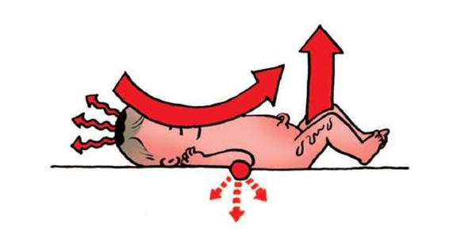
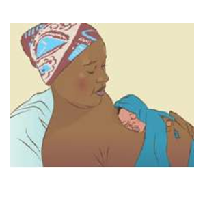
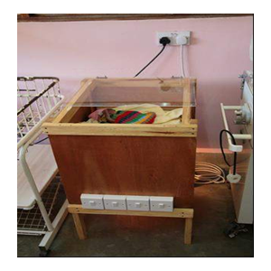
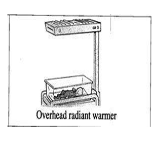
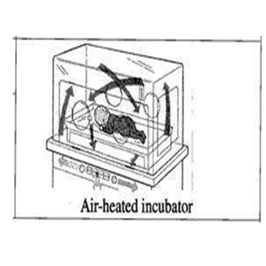

The N Y I is most vulnerable to hypothermia during the first few hours after birth, although the condition may occur later too, for example during bathing, on a cold night or during transportation, if measures to keep the baby warm are inadequate. (Sick or low birth weight babies admitted to neonatal units with hypothermia are more likely to die than those admitted with normal temperatures).
An easy way to assess newborn baby’s temperature is by ‘touch’. This can be easily taught to mothers and health workers. The baby’s abdomen is felt with the back of hand and compared with the health care worker’s forehead. Abdominal temperature represents the core temperature and it is reliable in the diagnosis of hypothermia. The warm and pink feet of the baby indicate that the baby is in thermal comfort. But when feet are cold and trunk is warm, it indicates that the baby has cold stress.
Preferably use an electronic thermometer in the NYI.
Axillary temperature: This method is as good as rectal and probably safer (less risk of injury or infection). The temperature is read after one minute. For digital thermometers, record the temperature after the reading has stabilized with a bleep.Rectal temperature: Do not use this method for routine monitoring. However, it is the best guide for core temperature in cold (hypothermic) sick neonates.
The NYI has a normal body temperature between 36.5-37.5°C.
| Classification | Temperature |
|---|---|
| Mild | 36.0-36.4°C |
| Moderate | 32.0-35.9°C |
| Severe | < 32.0°C |
A community-based study in Nepal, found that mortality increased by approximately 80% for every degree Celsius decrease in first observed axillary temperature and that relative risk of death ranged from 2 to 30 times for moderate hypothermia, increasing with greater severity of hypothermia 5.
A study in India that included only hypothermic babies on admission found mortality ranged from 39.3% for mild hypothermia, 51% for moderate hypothermia to 80% for severe hypothermia. Moderate hypothermia has a much worse outcome when associated with other newborn problems and fatality rates increase to 71% when the baby is also hypoglycemic, 83% when hypoxic and 90% when shocked 6.
The 4 ways by which a baby may lose heat

If the temperature continues to fall the baby will become sick and may even die.
| Method of heat loss | Prevention |
|---|---|
| Evaporation (e.g. wet baby) | Immediately after birth dry baby with a clean, warm, dry cloth |
| Conduction (e.g. contact with a cold surface of a weighing scale) | Put the baby on the mother’s abdomen or on a warm surface, delay weighing if room too cold |
| Convection (e.g. exposure to draught) | Close the windows, switch off fans |
| Radiation (e.g. cold surroundings) | Provide a warm, draught free room for delivery; at least 25ºC |
These are procedures to be taken at birth and during the next few hours and days in order to minimise heat loss in all newborn.
10 steps in warm chain:1. Warm delivery room
2. Immediate drying
3. Skin to skin contact
4. Breast feeding
5. Bathing and weighing postponed
6. Appropriate clothing/bedding
7. Mother and baby kept together
8. Warm resuscitation
9. Warm transportation
10. Training and awareness raising
In the Delivery Room
Skin-to-skin contact (Kangaroo Mother Care)If there are no signs of distress, a mother can provide a warm environment with skin to skin contact for the baby. If the baby is <2500 grams this should be continued as kangaroo mother care. Place the baby, with a nappy and hat; upright inside mother’s clothing against mother’s bare skin over the chest (a loose blouse, sweater or wrap tied at the waist holds the baby). The baby should wear a hat. Let baby suckle at the breast as often as s/he wants, but at least every 2 hours. KMC
Bathing and weighing postponedBathing should be delayed until at least 24 hours after birth. Blood, meconium and some of the vernix will have been wiped off during drying at birth. The remaining vernix does not need to be removed as it is harmless, may reduce heat loss and is reabsorbed through the skin during the first days of life.
Weighing the baby at birth also puts it at risk of heat loss and should be postponed for several hours unless the room temperature is warm.
Cot-nursing in hospital (mother cannot stay with the baby)Appropriate clothing and bedding
As a general rule, newborns need one or two more layers of clothing and bedding than adults. Covers should not be tight to allow air spaces between the layers as trapped air is a very efficient insulator. Keep ambient atmospheric temperature warm for baby’s weight and postnatal age. Monitor body temperature frequently at least 3 hourly during the initial post-natal days.
Hot cotIf a baby cannot stay with his mother using Kangaroo care then a warm cot is helpful. The Blantyre hot cot is a simple incubator that uses four 60 watt light bulbs to raise the air temperature within the cot by 1.5C per light bulb. A baby may need one, two, three or all four bulbs to be on to stay warm.
Check the baby’s temperature after an hour in the cot, and if the baby’s temperature increases, turn off two bulbs to avoid over heating the baby and recheck the babies temperature regularly.
The body cannot function well when it is cold. The baby
The NYI should be quickly re-warmed. The method selected for re-warming will depend on how sick the NYI is and availability of mother, staff and equipment.
The methods to use include:




Note: There is insufficient evidence to support superiority of either radiant warmers or incubators over the other for the care of preterm babies. In making any choice between the two devices, the health-care providers’ preferences and costs should be considered.
The mother should continue breast feeding as normal but if the infant is too weak to breast feed, breast milk can be given by gastric tube gastric tube. Every hypothermic newborn should be assessed for infection.
Monitor oxygen saturations, heart rate and glucose, some infants may develop apnoeas during rewarming.
Monitor axillary temperature every hour till it reaches 36.5°.{kind=link}
{kind=link}
{kind=link}
{kind=link}
{kind=link}